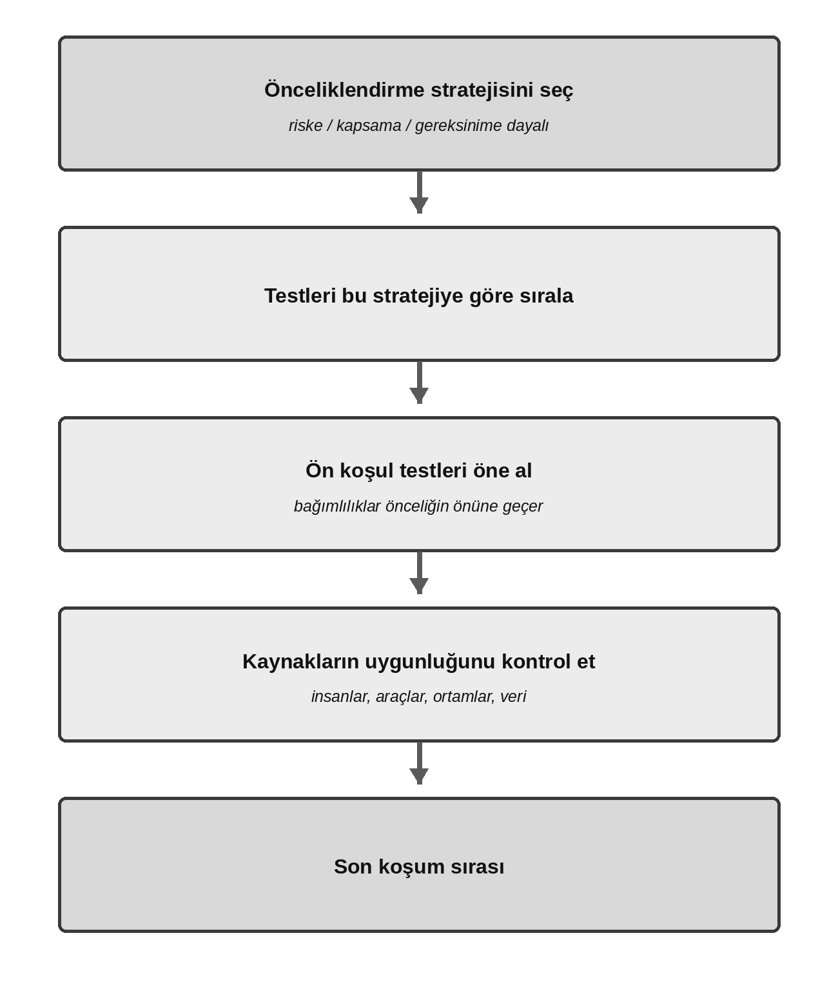
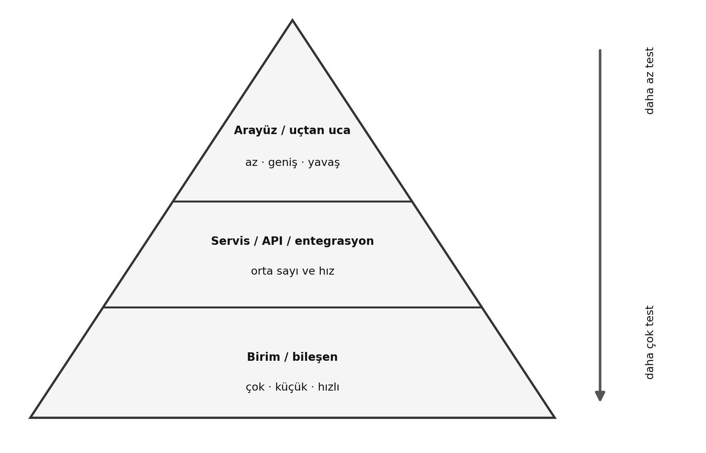
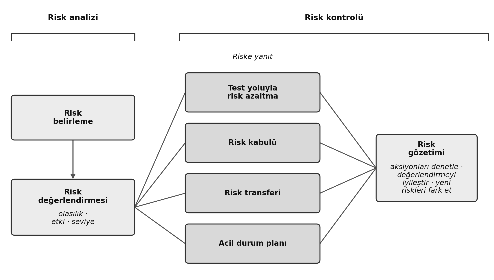

Bölüm 5 — Test Aktivitelerini Yönetme
Öğrenme hedefleri: 16 · K1 4 / K2 9 / K3 3 · Bu bölümden sınav sorusu: 9
Anahtar kelimeler: hata yönetimi (defect management), hata raporu (defect report), giriş kriterleri (entry criteria), çıkış kriterleri (exit criteria), ürün riski (product risk), proje riski (project risk), risk (risk), risk analizi (risk analysis), risk değerlendirmesi (risk assessment), risk kontrolü (risk control), risk belirleme (risk identification), risk seviyesi (risk level), risk yönetimi (risk management), risk azaltma (risk mitigation), risk gözetimi (risk monitoring), risk bazlı test (risk-based testing), test yaklaşımı (test approach), test tamamlama raporu (test completion report), test kontrolü (test control), test gözetimi (test monitoring), test planı (test plan), test planlama (test planning), test ilerleme raporu (test progress report), test piramidi (test pyramid), test stratejisi (test strategy), test çeyrekleri (testing quadrants)
Bu bölüm, Bölüm 4 ile birlikte sınavın en ağır iki bölümünden biridir. Test etmeyi bir yönetim, strateji ve kaynak planlama disiplini olarak ele alır. Üç K3 sorusu prosedüreldir ve her biri pratikle öğrenebileceğiniz açık bir kalıba dayanır: tahminleme için bir formül, önceliklendirme için bağımlılık kontrolü adımları, hata raporu için de yapısal bir kontrol listesi. Buradaki örnekleri kâğıt üzerinde çözmek, ardından bölüm sonundaki alıştırmaları yapmak sizi bu üç sorunun hepsine iyi hazırlar.
5.1 Test Planlama
Bir test planının amacı ve içeriği (FL-5.1.1 — K2)
Bir test planı (test plan); projenin test hedeflerini, kullanacağı kaynakları (insanlar, araçlar, ortam), izleyeceği süreçleri, bütçeyi, kısıtları ve takvimi ortaya koyan resmî bir belgedir. Planlama sırasında alınan kararları kayda geçirir ve paydaşlara iletir. Ders programı plana dört amaç yükler: test hedeflerine ulaşmanın araçlarını ve takvimini ortaya koyar; aktivitelerin üzerinde uzlaşılmış kriterleri karşılayacağını teyit etmeye yardımcı olur; ekibi ve diğer paydaşları bilgilendirir; test etmenin test politikasına ve stratejisine uyup uymadığını, uymuyorsa neden ayrıldığını gösterir. Bir test stratejisi (test strategy), test etmenin genel olarak nasıl yapıldığını genellikle organizasyon seviyesinde anlatır; test planı ise onu tek bir test projesine uygular. Planı hazırlamak ekibi; riskler, takvimler, insanlar, araçlar, maliyetler ve eforla ilgili gelecekteki zorluklarla, harekete geçmek için hâlâ zaman varken yüzleşmeye de zorlar.
ISTQB®’ye göre tipik bir test planı şu ana bileşenleri içerir: testin bağlamı (kapsam, hedefler ve testlerin dayanacağı test esası belgeleri); varsayımlar ve kısıtlar (planlarken doğru kabul edilenler, örneğin “test ortamı 3. sprintte hazır olacak”, ve projenin kısıtları); paydaşlar ve roller (kimin hangi sorumluluğu üstlendiği, ekibin eğitim ve işe alım ihtiyaçları); iletişim ve raporlama (durum raporlarının ne sıklıkla, hangi şablonlarla ve kime gideceği); risk kaydı (ortaya çıkabilecek ürün ve proje risklerinin analizi); test yaklaşımı (test approach) (test seviyeleri ve test çeşitleri, test teknikleri, test çıktıları, giriş ve çıkış kriterleri, testin bağımsızlığı, toplanacak metrikler, test verisi ve test ortamı gereksinimleri, test politikasından ve test stratejisinden sapmalar); bütçe ve takvim (kilometre taşları ve maliyet kırılımları).
Çevik projelerde planlama katmanlıdır: sürüm planlaması geniş stratejik çerçeveyi çizer, döngü (sprint) planlaması ise her döngü için ayrıntılı test görevlerini ekler. Test planı başta bir kez yazılıp rafa kaldırılan ağır bir nesne değildir; süreç ilerledikçe sürekli güncellenen, yaşayan bir belgedir.
Sınav odağı. Yaygın bir kalıp size dört iş ürünü verir ve hangisinin test planı içeriği olduğunu ya da olmadığını sorar. Giriş ve çıkış kriterleri, riskler ve test yaklaşımı plana aittir. Daha sonraki koşum aşamalarında üretilen çıktıları sayan şıklara dikkat edin: test kayıtları, hata istatistiği dökümleri ya da test tamamlama raporları hiçbir zaman test planının içinde yer almaz; bunlar sürecin sonunda çıkan çıktılardır. Planın ana görevi kaliteyi tek başına güvence altına almak değil, stratejiyi kayda geçirmek ve iletmektir.
Hemen Pekiştir
HP 5.1.1-a. Aşağıdakilerden hangisi bir test planının amaçlarından biridir?
- (a) Her test senaryosunun ayrıntılı adımlarını kaydetmek
- (b) Önceki sürümde bulunan hataları listelemek
- (c) Test sırasında bulunan hatalara geliştirici atamak
- (d) Test etmenin mevcut test politikasına ve test stratejisine uyacağını göstermek ya da bunlardan neden sapacağını açıklamak
Cevabı göster
Cevap: (d). Ders programı bunu test planının amaçları arasında sayar. Ayrıntılı test adımları (a) daha sonra, test uyarlama sırasında üretilir; hata listeleri (b) ve hata atamaları (c) plana değil, hata yönetimine aittir.
HP 5.1.1-b. Bir test planının ana amacı nedir?
- (a) Kaliteyi tek başına güvence altına almak
- (b) Seçilen test yaklaşımını kayda geçirmek ve bütün paydaşlara iletmek
- (c) Organizasyonun test stratejisinin yerini almak
- (d) Test koşumunun sonuçlarını kaydetmek
Cevabı göster
Cevap: (b). Plan kararları belgeler ve iletir; kaliteyi tek başına güvence altına almaz, test stratejisinin yerini almaz, onu uygular; koşum sonuçları ise daha sonra kaydedilir.
HP 5.1.1-c. Döngüsel bir yaşam döngüsü kullanan bir ekipte, sürüm planlaması ve döngü planlama ilerledikçe test planı nasıl ele alınmalıdır?
- (a) Projenin başında bir kez yazılır, sonra sabit bir referans olarak değiştirilmeden tutulur
- (b) Yalnızca sürümün sonunda, bütün test sonuçları belli olduğunda yazılır
- (c) Planlama seviyeleri kapsamı, riskleri ve test yaklaşımını netleştirdikçe güncellenir
- (d) Yerini tamamlanma tanımı alır, bu yüzden test planlamaya gerek kalmaz
Cevabı göster
Cevap: (c). Test planı yaşayan bir belgedir. Sürüm planlaması her döngü için test yaklaşımının ve test planının temelini kurar; her planlama seviyesi ayrıntı ekledikçe plan netleşir.
Test uzmanının döngü ve sürüm planlamasına katkıları (FL-5.1.2 — K1)
Çevik ve döngüsel modellerde test uzmanları iki planlama katmanına da etkin olarak katkı verir. Sürüm planlamasında (release planning) test uzmanları test edilebilir kullanıcı hikayelerini ve kabul kriterlerini yazmaya katılır, proje ve kalite riski analizlerinde yer alır, kullanıcı hikayelerine ait test eforunu tahmin eder, test yaklaşımını belirler ve sürümün testini planlar. Döngü planlamada (iteration planning) test uzmanları seçilen kullanıcı hikayelerinin ayrıntılı risk analizine katılır, test edilebilirliklerini belirler, onları test görevlerine böler, bu görevler için eforu tahmin eder ve test edilecek fonksiyonel ve fonksiyonel olmayan yönleri belirler.
Tablo 5.1 iki planlama seviyesini yan yana koyuyor; böylece hangi katkının hangi seviyeye ait olduğunu görebilirsiniz.
Tablo 5.1 — Test uzmanının sürüm ve döngü planlamasına katkıları
| Planlama seviyesi | Öngördüğü | Tipik test uzmanı katkıları |
|---|---|---|
| Sürüm planlaması | Ürünün piyasaya sürülmesi ve ürün iş listesi | Test edilebilir kullanıcı hikayeleri ve kabul kriterleri yazmak; proje ve kalite riski analizleri; kullanıcı hikayeleri için test eforunu tahmin etmek; test yaklaşımını belirlemek; sürüm için testi planlamak |
| Döngü planlama | Tek bir döngünün sonu ve döngü iş listesi | Kullanıcı hikayelerinin ayrıntılı risk analizi; test edilebilirliklerini belirlemek; hikayeleri görevlere, özellikle test görevlerine bölmek; bütün test görevleri için test eforunu tahmin etmek; fonksiyonel ve fonksiyonel olmayan yönleri belirlemek ve iyileştirmek |
Sınav odağı. Bu hedef doğrudan bir hatırlama sorusudur. Yanlış şıklar test uzmanının yetkisi dışındaki yönetim görevleri olabilir (örneğin “canlıya geçiş tarihine tek başına karar vermek” ya da “geliştiricileri görevlere atamak”). Test uzmanı eforu belirtir ve analiz yapar, ama idari tarih atamaları yapmaz.
Hemen Pekiştir
HP 5.1.2-a. Hangi test uzmanı katkısı sürüm planlamasına değil, döngü planlamaya aittir?
- (a) Sürüm için test yaklaşımını belirlemek
- (b) Ürün iş listesi için test edilebilir kullanıcı hikayeleri ve kabul kriterleri yazmak
- (c) Seçilen kullanıcı hikayelerini test görevlerine bölmek ve her görev için eforu tahmin etmek
- (d) Sürüm için testi planlamak
Cevabı göster
Cevap: (c). Hikayeleri görevlere, özellikle test görevlerine bölmek ve bunların eforunu tahmin etmek döngü planlamaya ait bir katkıdır. (a), (b) ve (d) sürüm planlamasına ait katkılardır.
HP 5.1.2-b. Aşağıdakilerden hangisi bir test uzmanının planlama katkılarından biri DEĞİLDİR?
- (a) Kalite risklerini analiz etmek
- (b) Test eforunu tahmin etmek
- (c) Canlıya geçiş tarihini tek başına duyurmak
- (d) Hikayeleri test görevlerine bölmek
Cevabı göster
Cevap: (c). Sürüm tarihini duyurmak bir yönetim kararıdır; test uzmanı bu karara bilgi sağlar, ama tek başına vermez.
HP 5.1.2-c. Bir test uzmanı yeni bir mobil bankacılık uygulamasının sürüm planlamasına katılıyor. Aşağıdakilerden hangisi bu planlama seviyesinde tipik bir test uzmanı katkısıdır?
- (a) Canlıya geçiş tarihini belirleyip müşterilere duyurmak
- (b) Sürüm iş listesindeki kullanıcı hikayelerine geliştirici atamak
- (c) Sürüm için üretim sunucularını yapılandırmak
- (d) Test edilebilir kullanıcı hikayelerini ve kabul kriterlerini yazmaya yardım etmek
Cevabı göster
Cevap: (d). Sürüm planlamasında test uzmanları test edilebilir kullanıcı hikayelerini ve kabul kriterlerini yazmaya yardım eder, risk analizine katılır, test eforunu tahmin eder ve sürüm için testi planlar. Diğer şıklar test uzmanı katkısı değil, yönetim ya da operasyon görevleridir.
Giriş kriterlerini ve çıkış kriterlerini yönetme (FL-5.1.3 — K2)
Giriş kriterleri (entry criteria), belirli bir test aktivitesine resmî olarak başlamak için karşılanması gereken ön koşulları tanımlar. Giriş kriterleri karşılanmazsa aktivite büyük olasılıkla daha zor, daha uzun, daha maliyetli ve daha riskli geçer; çünkü ekip hata bulmak yerine ortamı kurmak ya da eksik verinin peşine düşmek gibi hazırlık sorunlarıyla zaman kaybeder. Giriş kriterleri üç temel alanı kapsar: kaynakların hazır olması (ortam, araçlar, insanlar, veri, bütçe), iş ürünlerinin hazır olması (test esası, yazılmış test senaryoları) ve test nesnesinin başlangıçtaki kalite seviyesi (örneğin kodun bir duman testini geçmesi). Çıkış kriterleri (exit criteria), bir test aktivitesini tamamlanmış ilan etmek için nelere ulaşılması gerektiğini tanımlar. Ulaşılan kapsam, çözülmemiş hata sayısı, hata yoğunluğu ve başarısız test senaryosu sayısı gibi bütünlük ölçülerini; planlanan testlerin koşulup koşulmadığı, statik testin yapılıp yapılmadığı, bulunan her hatanın kayda geçirilip geçirilmediği ve bütün regresyon testlerinin otomatikleştirilip otomatikleştirilmediği gibi evet/hayır kriterlerini içerir. Her test seviyesinin kendi giriş ve çıkış kriterleri olmalıdır ve bunlar test hedeflerine göre değişir.
Şekil 5.1 iki kriter kümesini bir test aktivitesinin iki yanındaki kapılar olarak gösteriyor. Giriş kapısı “Başlamaya hazır mıyız?” diye sorar. Çıkış kapısı ise “Bitirmeye hazır mıyız?” diye.
![Şekil 5.1 — Bir test aktivitesinin iki yanında iki kapı olarak giriş kriterleri ve çıkış kriterleri. “Giriş kriterleri: Başlamaya hazır mıyız?” etiketli bir karar baklavası “Evet” ile “Test etme” etiketli kutuya götürür; “Hayır” kolunda “hazırlığı tamamla, bekle” yazar. Test etme kutusu “Çıkış kriterleri: Bitirmeye hazır mıyız?” etiketli ikinci baklavaya götürür; bu baklavanın “Evet” kolu “bitti”ye gider, “Hayır” kolunda ise “teste devam; erken bitirme ancak paydaşlar kalan riski kabul ederse” yazar.](figures/fig_5_1_entry_exit_gates.png)
Sınav için iki özel kural önemlidir. Birincisi, zamanın ya da bütçenin bitmesi de testin sona ermesini zorlayabilir. Bu ancak paydaşlar, çıkış kriterleri karşılanmadan canlıya geçmenin kalan risklerini bilinçli olarak kabul edip onaylarsa meşrudur. İkincisi, çevik terminolojide bu kapıların adı değişir: çevik ekiplerde kullanıcı hikayeleri için giriş kriterlerinin rolünü hazır olma tanımı (Definition of Ready, DoR) üstlenir; ders programındaki adı “Hazır Tanımı”dır. Çıkış kriterlerinin rolünü ise tamamlanma tanımı (Definition of Done, DoD) üstlenir; ders programı bunu “Tamamlandı Tanımı” diye adlandırır.
Sınav odağı. Size pratik bir durum verilir ve bunun hangi kriter olduğu sorulur. Ayrım sözcüklerdedir: “ortamın hazır olması, duman testinin geçmesi, verinin yüklenmiş olması” testin başlangıcına işaret eder, yani bir giriş kriteridir (DoR); “kapsama ulaşıldı, sınırın üstünde açık hata yok, planlanan bütün test senaryoları koşuldu” testin sonuna işaret eder, yani bir çıkış kriteridir (DoD).
Hemen Pekiştir
HP 5.1.3-a. Aşağıdakilerden hangisi sistem testi için bir çıkış kriteri değil, bir giriş kriteridir?
- (a) Planlanan sistem testleri koşulmuştur
- (b) Hata yoğunluğu üzerinde uzlaşılan sınırın altındadır
- (c) Test ortamı, test verisi ve test uzmanları hazırdır
- (d) Bulunan bütün hatalar raporlanmıştır
Cevabı göster
Cevap: (c). Kaynakların hazır olması tipik bir giriş kriteridir. (a), (b) ve (d) testi bitirmek için nelere ulaşılması gerektiğini anlatır; dolayısıyla çıkış kriterleridir.
HP 5.1.3-b. Zamanın ya da bütçenin bitmesiyle teste son verilebilir mi?
- (a) Hayır; test ancak bütün çıkış kriterleri karşılandığında durabilir
- (b) Hayır; çıkış kriterleri hiçbir zaman gevşetilemez
- (c) Evet, her durumda; kalan risk hiçbir zaman raporlanmaz
- (d) Evet; paydaşlar daha fazla test yapmadan canlıya geçmenin riskini gözden geçirip kabul ederse
Cevabı göster
Cevap: (d). Çıkış kriterleri karşılanmadan durmak ancak kalan riskin bilinçli olarak kabul edilmesi ve raporlanmasıyla meşrudur.
HP 5.1.3-c. Çevik bir ekip, bir kullanıcı hikayesinin ancak kabul testleri geçtiğinde, otomatik regresyon testleri geçtiğinde ve yüksek önem derecesinde açık hata kalmadığında bitmiş sayılacağı konusunda uzlaşıyor. Bu uzlaşmanın adı nedir ve hangi klasik kavrama karşılık gelir?
- (a) Tamamlanma tanımı; çıkış kriterleri
- (b) Hazır olma tanımı; giriş kriterleri
- (c) Hazır olma tanımı; çıkış kriterleri
- (d) Tamamlanma tanımı; giriş kriterleri
Cevabı göster
Cevap: (a). Bir hikayeyi bitmiş saymanın koşulları ekibin tamamlanma tanımıdır; bu da çıkış kriterlerinin çevik adıdır. Hazır olma tanımı ise bir hikayenin üzerinde çalışmaya başlanmadan önce karşılaması gereken giriş kriterlerini tutar.
Tahminleme teknikleri (FL-5.1.4 — K3)
Kritik bir kural. Bir test eforu tahmini kesin bir söz ya da mutlak bir taahhüt değildir. Tahminler her zaman varsayımlara dayanır ve doğaları gereği bir hata payı taşır. Büyük bir test işini tek blok hâlinde tahmin etmeye çalışmak büyük sapmalar üretir; bu yüzden işi önce küçük görevlere bölmek (iş kırılımı) ve en sonda bu küçük parçaların tahminlerini toplamak doğruluğu önemli ölçüde artırır.
Ders programı dört tahminleme (estimation) tekniği anlatır. Oranlara dayalı tahminleme (estimation based on ratios) ve dışdeğerleme (extrapolation) metriğe dayalıdır ve sınav bunlarla hesap yapmanızı isteyebilir; Wideband Delphi ve üç noktalı tahminleme (three-point estimation) uzmana dayalıdır ve üç noktalı tahminlemenin de uygulanacak bir formülü vardır. Oranlara dayalı tahminleme, organizasyonun geçmiş verilerinden standart bir oran çıkarır; en yaygını geliştirme eforu ile test eforu arasındaki dengedir. Geçmiş projelerde her üç günlük kodlama için bir gün test gerekmişse, geliştirmesi 450 gün sürecek yeni bir proje için 450 / 3 = 150 test günü tahmin edilir. Dışdeğerleme, projenin erken döngülerinden ölçümler alır ve kalan eforu bu canlı veriden yansıtır; son döngülerin ortalama eforunu kullanan çevik bir ekip bunun açık bir örneğidir. Wideband Delphi uzmana dayalı, döngüsel bir tekniktir: uzmanlar birbirinden bağımsız tahmin yapar, uçta kalan tahminler tartışılır ve grup fikir birliğine varana kadar her uzman yeniden ve tek başına tahmin yapar. Poker planlama tekniği (planning poker), Wideband Delphi’nin çevik ekiplerde yaygın kullanılan bir varyantıdır; kartlar efor büyüklüğünü temsil eden sayılar taşır. Üç noktalı tahminlemede uzmanlar üç değer verir: a, iyimser tahmin; m, en olası tahmin; b, kötümser tahmin. Bunlar şu formüllerle son efora ve sapmaya dönüştürülür: son tahmin E = (a + 4m + b) / 6, standart sapma SD = (b − a) / 6.
Çözümlü örnek — yeni bir raporlama modülü için test eforu
Kısım 1 (oran ve dışdeğerleme). Bir test ekibinin geçmiş verileri, test eforunun geliştirme süresinin tam üçte biri olduğunu gösteriyor. Yeni bir modülün kodlaması için 480 kişi-saat bütçelenmiş. Oranlara dayalı yaklaşımla test eforu tahmini 480 / 3 = 160 kişi-saattir. Proje başlıyor ve gerçek süreyi ölçmek için sistemin birbirine benzeyen 12 raporundan ilk 3’ü test ediliyor; ilk 3 rapor tam 42 kişi-saat sürüyor. Buradan dışdeğerleme yapalım: rapor başına gerçek tüketim 42 / 3 = 14 kişi-saattir; toplam 12 rapor olduğuna göre canlı son tahmin 14 × 12 = 168 kişi-saate güncellenir. Canlı veri, kâğıt üzerindeki oran tahminini gerçeğe yaklaştırmıştır.
Kısım 2 (üç noktalı hesap). Bilinmeyen yeni bir API entegrasyonu için ekip şu değerlerde uzlaşıyor: iyimser (a) = 12 saat; en olası (m) = 18 saat; kötümser (b) = 36 saat.
E = (12 + 4 × 18 + 36) / 6 = 120 / 6 = 20 saat. SD = (36 − 12) / 6 = 4 saat.
Ekip bu test tahminini yönetime 20 ± 4 saat olarak raporlar: iş büyük olasılıkla 16 ile 24 saat arasında bitecektir.
Sınav odağı. K3 hesabında hata yapmamak için, formülün istediği gibi en olası değer m’yi 4 ile ağırlıklandırın. Çekici bir yanlış şık, düz aritmetik ortalamayla, (a + m + b) / 3 ile hesaplanmış olandır; yukarıdaki örnekte bu hata 20 yerine 22 verirdi. Kalan efor ile toplam efor sorularında hangisinin gerçekten sorulduğuna dikkat edin.
Bağımsız alıştırma 5.A
Bir veri taşıma projesinin testi için uzmanlar şu üç noktalı efor değerlerini veriyor: iyimser (a) = 4 kişi-gün, en olası (m) = 10 kişi-gün, kötümser (b) = 22 kişi-gün. Son tahmini (E) ve standart sapmayı (SD) hesaplayın. (Çözüm bu bölümün sonunda.)
Hemen Pekiştir. Alıştırma, çözümlü örnek ve 5.A’dır; tek soru formülü pekiştirir.
HP 5.1.4. Üç noktalı tahminlemede hangi yaygın dikkatsizlik yanlış bir cevaba yol açar?
- (a) E = (a + 4m + b) / 6 formülünü kullanmak
- (b) SD = (b − a) / 6 formülünü kullanmak
- (c) En olası değer m’yi 4 ile ağırlıklandırmak
- (d) Basit aritmetik ortalamayı, (a + m + b) / 3’ü kullanmak
Cevabı göster
Cevap: (d). En olası değer 4 ile ağırlıklandırılmalıdır; düz ortalama çekici bir yanlış cevaptır.
Test senaryosu önceliklendirme (FL-5.1.5 — K3)
Yazılmış test senaryoları ve prosedürleri hazır olduğunda, bunların çizelgede hangi sırayla koşulacağına karar verilmelidir. Ders programı üç önceliklendirme stratejisi tanımlar. Riske dayalı önceliklendirme (risk-based prioritization), en önemli riskleri kapsayan test senaryolarını önce koşar. Kapsama dayalı önceliklendirme (coverage-based prioritization), en yüksek kapsama ulaşan senaryoları önce koşar; ek kapsam önceliklendirmesi (additional coverage prioritization) varyantında ise sıradaki senaryo, henüz ulaşılmamış kapsamı en çok artıran senaryodur. Gereksinime dayalı önceliklendirme (requirements-based prioritization), test senaryolarını izlendikleri gereksinimlerin paydaşlarca belirlenmiş önceliklerine göre sıralar.
İki kısıt ideal sırayı değiştirebilir. Hangi strateji seçilirse seçilsin, test senaryolarının ya da test edilen özelliklerin bağımlılıkları varsa ideal sıra işlemeyebilir. Yüksek öncelikli bir B testi ancak düşük öncelikli bir A testi ihtiyaç duyduğu veriyi oluşturduktan sonra koşulabiliyorsa, A’nın kendi önceliği ne kadar düşük olursa olsun A, B’den önce koşulmalıdır. Sıra, kaynakların uygunluğunu da hesaba katmalıdır: test araçları, test ortamları ya da kişiler yalnızca belirli bir zaman aralığında kullanılabilir olabilir. Şekil 5.2, strateji seçiminden son koşum sırasına kadar bu adımları özetliyor.

Çözümlü örnek — iade modülü testlerini sıralamak
Bir e-ticaret sistemindeki beş test senaryosu, paydaşların belirlediği iş gereksinimi önceliklerine izleniyor (1 = en yüksek iş önceliği, 4 = en düşük):
| Test kimliği | Gereksinim | Gereksinim önceliği | Teknik bağımlılık |
|---|---|---|---|
| T1 | R4 — hediye kartına iade | 3 | önce T3’ün başarıyla koşulması gerekir |
| T2 | R1 — kredi kartına iade | 1 | yok (bağımsız) |
| T3 | R2 — iade talebi oluşturma | 2 | yok (bağımsız) |
| T4 | R5 — iade finans raporunu dışa aktarma | 4 | yok (bağımsız) |
| T5 | R1 — kredi kartına kısmi iade | 1 | önce T3’ün başarıyla koşulması gerekir |
Görev: gereksinime dayalı önceliklendirmeye ve teknik bağımlılık kısıtlarına uyarak doğru son koşum sırasını çıkarın.
Adım 1, yalnızca iş önceliğine göre sıralayın. Önce öncelik 1 gelir: T2 ve T5. Sonra öncelik 2, T3; sonra öncelik 3, T1; en sonda da öncelik 4, T4. Saf sıralama: T2, T5, T3, T1, T4.
Adım 2, teknik bağımlılık filtrelerini uygulayın. T5 de T1 de sistemde önce bir iade talebinin açılmış olmasını, yani T3’ün tamamlanmasını gerektirir. Bu, iş önceliği T5’inkinden düşük olsa bile T3’ü çizelgede T5’in ve T1’in soluna (önüne) zorlar.
Adım 3, koşum sırasını kesinleştirin: T2, T3, T5, T1, T4. T2 ve T5 aynı öncelik 1’i paylaşır, ama yalnızca T2 hemen koşulabilir; T5 T3’ü beklemek zorundadır. Bu yüzden T2 ilk sırada kalır ve T3 yalnızca gerektiği kadar, yani T5’in hemen önüne çekilir; T2’nin önüne geçmez. T5 ve T1 T3’ü izler, T4 de en düşük öncelikle en sondaki yerini alır.
Sınav odağı. K3 senaryo sorularında sizden bu son koşum sırası istenir. Çekici bir yanlış şık bağımlılıkları yok sayar ve senaryoları iş önceliği sütununa göre olduğu gibi dizer. Teknik kısıtları bozmayan ve ön koşul senaryosunu, ona ihtiyaç duyan senaryonun yalnızca hemen önüne, daha ileriye değil, taşıyan şıkka odaklanın.
Bağımsız alıştırma 5.B
Elinizde dört test senaryosu var. Ürün riski analizi, her birinin kapsadığı alana bir risk seviyesi veriyor (olasılık × etki; yüksek olan daha risklidir): A, 16; B, 8; C, 20; D, 3. Teknik analiz, C’nin ancak B koşulup tamamlandıktan sonra koşulabileceğini ortaya koymuş. Başka kısıt yok. Riske dayalı önceliklendirmeye ve bağımlılık kısıtına uyarak bu dört testi sıralayın. (Çözüm bu bölümün sonunda.)
Hemen Pekiştir. Alıştırma, çözümlü örnek ve 5.B’dir.
HP 5.1.5. T7 test senaryosunun önceliği en yüksektir, ama T7 ancak düşük öncelikli T2 test senaryosu T7’nin ihtiyaç duyduğu müşteri hesabını oluşturduktan sonra koşulabilir. Koşum çizelgesi ne yapmalıdır?
- (a) T7’yi önce koşmalıdır, çünkü sırayı her zaman öncelik belirler
- (b) T2’yi çizelgeden çıkarmalıdır, çünkü önceliği düşüktür
- (c) T2’yi T7’den önce koşmalıdır, çünkü bağımlılık öncelik sırasının önüne geçer
- (d) Zaman kazanmak için T7’yi ve T2’yi aynı anda koşmalıdır
Cevabı göster
Cevap: (c). Yüksek öncelikli bir test senaryosu kendisinden daha düşük öncelikli bir senaryoya bağımlıysa, önce o düşük öncelikli senaryo koşulmalıdır.
Test piramidi (FL-5.1.6 — K1)
Test piramidi (test pyramid), testlerin ayrıntı düzeyinde nasıl farklılaştığını gösteren bir modeldir. Her test hedefi farklı bir otomasyon seviyesi gerektirdiği için ekibin otomasyonu planlamasına ve test eforunu paylaştırmasına yardımcı olur. Piramitte yukarı çıktıkça ayrıntı düzeyi kabalaşır, izolasyon azalır (yani sistemin diğer parçalarına bağımlılık artar) ve koşum süresi uzar. En alt katmanda küçük, izole ve hızlı testler bulunur; her biri küçük bir fonksiyonalite parçasını kontrol eder, bu yüzden makul kapsam için çoğunlukla pek çok teste ihtiyaç duyulur. En üstteki katmanda ise karmaşık, yüksek seviyeli, uçtan uca testler bulunur; bunlar daha yavaştır ve her biri büyük bir fonksiyonalite parçasını kontrol eder, bu yüzden genellikle yalnızca birkaç tanesi gerekir. Katmanların sayısı ve adları değişebilir: Cohn’un özgün modeli birim, servis ve kullanıcı arayüzü (UI) testlerini kullanır; yaygın başka bir sürüm ise birim (bileşen), entegrasyon (bileşen entegrasyonu) ve uçtan uca testleri kullanır. Şekil 5.3 üç katmanlı bir sürümü gösteriyor.

Sınav odağı. Bu hedefin soruları K1’dir ve katmanların özelliklerini yoklar: ayrıntı düzeyi, izolasyon, koşum süresi ve her katmanın kaç teste ihtiyaç duyduğu. Dikkat edilecek şey, bir özelliği tersine çeviren şıktır; örneğin “üst katman testleri, her biri daha çok fonksiyonalite kapsadığı için daha hızlıdır”. Bazı uygulayıcılar ters dönmüş piramide “dondurma külahı” der; terim yararlı bir arka plan bilgisidir, ama bir ders programı kavramı değildir.
Hemen Pekiştir
HP 5.1.6-a. Test piramidinde çok sayıdaki hızlı ve izole test hangi katmandadır?
- (a) Alt katman (birim / bileşen)
- (b) Üst katman (arayüz / uçtan uca)
- (c) Yalnızca orta katman (servis / API)
- (d) Hiçbir katman; testler eşit dağılır
Cevabı göster
Cevap: (a). Taban çok sayıda küçük, hızlı ve izole test barındırır.
HP 5.1.6-b. Test piramidi ekibi neyde destekler?
- (a) Her test seviyesinde hangi test tekniğinin uygulanacağını seçmekte
- (b) Bir test grubundaki test senaryolarının koşum sırasına karar vermekte
- (c) Her test seviyesi için çıkış kriterlerini belirlemekte
- (d) Test otomasyonunda ve test eforunun paylaştırılmasında
Cevabı göster
Cevap: (d). Testler ayrıntı düzeyinde farklılaştığı için piramit ekiplerin otomasyonu planlamasına ve test eforunu paylaştırmasına yardım eder. Teknik atamaz (a), test senaryolarını sıralamaz (b), çıkış kriteri de belirlemez (c).
HP 5.1.6-c. Test piramidinin üst katmanındaki testler hakkında hangi ifade doğrudur?
- (a) Küçük ve izoledirler, bu yüzden makul bir kapsama ulaşmak için çok sayıda gerekir
- (b) Her biri daha çok fonksiyonalite kapsadığı için alt katmanlardaki testlerden daha hızlı koşarlar
- (c) Büyük fonksiyonalite parçalarını kontrol eder ve yavaş koşarlar, bu yüzden genellikle yalnızca birkaç tanesi gerekir
- (d) Piramitteki en yüksek test izolasyonuna sahiptirler
Cevabı göster
Cevap: (c). Katman yükseldikçe ayrıntı düzeyi ve izolasyon azalır, koşum süresi uzar. Tepedeki her uçtan uca test büyük bir fonksiyonalite parçasını kontrol eder; bu yüzden o seviyede genellikle birkaç test makul bir kapsam sağlar.
Test çeyrekleri (FL-5.1.7 — K2)
Test çeyrekleri (testing quadrants) modeli, çevik yazılım geliştirmede test seviyelerini uygun test çeşitleri, aktiviteler, teknikler ve iş ürünleriyle eşleştiren iki eksenli bir sınıflandırmadır. Test yönetiminin, uygun her test çeşidinin ve seviyesinin YGYD’de yer aldığını kontrol etmesini sağlar ve bazı test çeşitlerinin bazı seviyelere daha iyi uyduğunu ortaya koyar. Geliştiricilere, test uzmanlarına ve iş temsilcilerine test çeşitlerini anlatmanın ve birbirinden ayırmanın ortak bir yolunu da verir. Yatay eksen, bir testin ekibi mi desteklediğini (geliştirmeye yol gösteren testler) yoksa ürünü mü eleştirdiğini (ürünü değerlendiren testler) ölçer. Dikey eksen, testin odağının işe dönük mü (teknik olmayan paydaşların dilinde) yoksa teknolojiye dönük mü (kodun ve mimarinin teknik dilinde) olduğunu sınıflandırır; ders programı bu iki yönü “iş odaklı” ve “teknoloji odaklı” diye adlandırır. Ortaya çıkan dört çeyrek şunlardır: Q1, teknolojiye dönük ve ekibi destekleyen (bileşen testleri ve bileşen entegrasyon testleri; otomatiktir ve CI sürecine dahil edilir); Q2, işe dönük ve ekibi destekleyen (fonksiyonel testler, örnekler, kullanıcı hikayesi testleri, kullanıcı deneyimi (UX) prototipleri, API testleri ve simülasyonlar; bunlar kabul kriterlerine bakar; manuel de otomatik de olabilir); Q3, işe dönük ve ürünü eleştiren (keşif testi, kullanılabilirlik testi ve kullanıcı kabul testi; kullanıcı odaklıdır ve çoğu zaman manueldir); Q4, teknolojiye dönük ve ürünü eleştiren (duman testleri ve kullanılabilirlik dışındaki fonksiyonel olmayan testler, örneğin performans, yük ve güvenlik testi; bunlar çoğu zaman otomatiktir).
Şekil 5.4 dört çeyreği iki eksen üzerine, her birinde ders programının saydığı tipik testlerle birlikte yerleştiriyor.
![Şekil 5.4 — İki eksen üzerinde test çeyrekleri: işe dönük ya da teknolojiye dönük; ekibi destekleyen ya da ürünü eleştiren. Q1 (teknolojiye dönük, ekibi destekler) CI’da otomatik koşan bileşen ve bileşen entegrasyon testlerini barındırır. Q2 (işe dönük, ekibi destekler) manuel ya da otomatik olabilen fonksiyonel testleri, örnekleri, kullanıcı hikayesi testlerini, UX prototiplerini, API testini ve simülasyonları barındırır. Q3 (işe dönük, ürünü eleştirir) kullanıcı odaklı ve çoğu zaman manuel olan keşif testini, kullanılabilirlik testini ve kullanıcı kabul testini barındırır. Q4 (teknolojiye dönük, ürünü eleştirir) çoğu zaman otomatik olan duman testlerini ve kullanılabilirlik testleri dışındaki fonksiyonel olmayan testleri barındırır.](figures/fig_5_4_testing_quadrants.png)
Sınav odağı. Size belirli bir test aktivitesi verilir (örneğin sızma testi ya da kullanılabilirlik testi) ve hangi çeyreğe ait olduğu sorulur. İkisi de işe dönük olan Q2 ile Q3 arasındaki ince çizgi kolayca bulanıklaşır. Şu soruyu sorun: Bu çalışma neyin ve nasıl yapılacağını tanımlamaya mı yardım ediyor, yoksa bitmiş yazılımı mı değerlendiriyor? Tanımlıyorsa Q2’dir; bitmiş işi inceliyor ya da deneyimliyorsa Q3’tür.
Hemen Pekiştir
HP 5.1.7-a. Her commit’te CI hattında koşan otomatik bileşen testleri hangi çeyreğe aittir?
- (a) Q1 (teknolojiye dönük ve ekibi destekleyen)
- (b) Q2 (işe dönük ve ekibi destekleyen)
- (c) Q3 (işe dönük ve ürünü eleştiren)
- (d) Q4 (teknolojiye dönük ve ürünü eleştiren)
Cevabı göster
Cevap: (a). Bileşen testleri teknolojiye dönüktür ve ekibin günlük geliştirmesini destekler; bu yüzden Q1’e aittir.
HP 5.1.7-b. Keşif testi, kullanılabilirlik testi ve kullanıcı kabul testi (KKT) hangi çeyreğe aittir?
- (a) Q1 (teknolojiye dönük ve ekibi destekleyen)
- (b) Q2 (işe dönük ve ekibi destekleyen)
- (c) Q3 (işe dönük ve ürünü eleştiren)
- (d) Q4 (teknolojiye dönük ve ürünü eleştiren)
Cevabı göster
Cevap: (c). Bitmiş ürünü değerlendiren işe dönük testler (çoğunlukla manuel) Q3’tür.
HP 5.1.7-c. Q2 ve Q3’ün ikisi de işe dönüktür. Aralarındaki ana fark nedir?
- (a) Q2 testleri teknolojiye dönük, Q3 testleri ise işe dönüktür
- (b) Q2 testleri geliştirmeye yol göstererek ekibi destekler, Q3 testleri ise bitmiş ürünü eleştirir
- (c) Q2 testleri her zaman manuel, Q3 testleri ise her zaman otomatiktir
- (d) Q2 testlerini yalnızca geliştiriciler, Q3 testlerini ise yalnızca iş temsilcileri koşar
Cevabı göster
Cevap: (b). Örnekler ve kullanıcı hikayesi testleri gibi Q2 testleri kabul kriterlerini kontrol eder ve geliştirmeye yol gösterir. Keşif testi ve kullanıcı kabul testi gibi Q3 testleri ürünü kullanıcı beklentilerine karşı ölçer. Q2 testleri manuel ya da otomatik olabilir, Q3 testleri ise çoğu zaman manueldir; dolayısıyla (c) gerçekleri tersine çevirir ve mutlaklaştırır.
5.2 Risk Yönetimi
Risk yönetiminin (risk management) iki ana aktivitesi vardır. Risk analizi (risk analysis), risk belirleme (risk identification) ve risk değerlendirmesinden (risk assessment) oluşur; risk kontrolü (risk control) ise risk azaltma (risk mitigation) ve risk gözetiminden (risk monitoring) oluşur. Risk bazlı test (risk-based testing), test aktivitelerini risk analizinin ve risk kontrolünün sonuçlarına göre seçen, sıralayan ve yürüten yaklaşımdır.
Risk, olasılık, etki ve risk seviyesi (FL-5.2.1 — K1)
Bir risk (risk), olabilecek bir şeydir (bir olay, tehlike, tehdit ya da durum) ve olursa projeye ya da ürüne zarar verir. Her risk iki faktörle nitelenir. Risk olasılığı (risk likelihood), riskin gerçekleşme ihtimalidir; 0’dan büyük ve 1’den küçüktür. Gerçekleşeceği kesin olan bir şey artık risk değil, bir sorundur; imkânsız bir şey de risk olamaz. Risk etkisi (risk impact), risk gerçekleşirse projenin bütçesine, takvimine ya da ürünün kalitesine vereceği zararın büyüklüğüdür. Risk seviyesi (risk level) riskin bir ölçüsüdür; olasılık ve etkiden belirlenir. Nicel bir yaklaşımda risk seviyesi olasılık çarpı etki olarak hesaplanır; nitel bir yaklaşımda bir risk matrisinden (risk matrix) okunur (örneğin olasılık ve etki ayrı ayrı düşük, orta ya da yüksek diye derecelendirilip bir ızgarada birleştirilir); ikisinin karması da mümkündür. Risk seviyesi, bir alanın ne kadar test eforu alacağına karar veren ana girdidir.
Sınav odağı. Bu K1 hedefi bir hatırlama maddesidir: risk seviyesi olasılık ve etkinin birlikte kullanılmasından, hesapla ya da bir risk matrisinden çıkar; hiçbir zaman yalnızca birinden çıkmaz. Olasılık kesin olarak 0 ile 1 arasındadır; bu yüzden kesin bir olay risk değil, sorundur. Bir riski yalnızca etkiye ya da yalnızca olasılığa göre sıralayan şıkka dikkat edin.
Hemen Pekiştir
HP 5.2.1-a. Risk seviyesini ne belirler?
- (a) Yalnızca olasılık
- (b) Yalnızca etki
- (c) Hesapla ya da bir risk matrisinde, olasılık ve etki birlikte
- (d) O alan için planlanan test senaryosu sayısı
Cevabı göster
Cevap: (c). Risk seviyesi olasılık ve etkiden belirlenir: nicel bir yaklaşımda bunların çarpımı olarak hesaplanır, nitel bir yaklaşımda bir risk matrisinden okunur.
HP 5.2.1-b. Risk olasılığı için hangisi doğrudur?
- (a) 0 ile 1 arasındadır; ne kesinlik ne de imkânsızlık risk sayılır
- (b) Her zaman tam olarak 1’dir
- (c) Negatif bir değer alabilir
- (d) Etki ile aynı şeydir
Cevabı göster
Cevap: (a). Olasılık 0 < p < 1 aralığındadır; uç durumlar (kesin/imkânsız) risk değildir.
HP 5.2.1-c. Bir risk çalıştayında bir iş analisti şöyle diyor: “Gece çalışan faiz toplu işi başarısız olursa, ertesi sabah yaklaşık 40.000 müşteri hesabı yanlış bakiye gösterir.” Bu ifade hangi risk özelliğini anlatır?
- (a) Risk olasılığı
- (b) Risk etkisi
- (c) Risk seviyesi
- (d) Risk azaltma
Cevabı göster
Cevap: (b). İfade, risk gerçekleşirse ortaya çıkacak sonuçları anlatır; bu da risk etkisidir. Arızanın ne kadar olası olduğu hakkında hiçbir şey söylemez; risk seviyesi ise olasılık ve etkiyi birlikte gerektirir.
Proje riskleri ve ürün riskleri (FL-5.2.2 — K2)
Ders programı riskleri etkiledikleri alana göre iki aileye ayırır ve hangisinin hangisi olduğunu ayırt etmenizi ister. Proje riskleri (project risk) projenin nasıl yönetildiği ve kontrol edildiğiyle ilgilidir; gerçekleştiklerinde projenin takvimini, bütçesini ya da kapsamını, dolayısıyla hedeflerine ulaşma yeteneğini etkiler. Ders programı onları gruplar: organizasyonel sorunlar (iş ürünü teslimatlarında gecikmeler, hatalı tahminler, maliyet kesintileri), insan kaynaklı sorunlar (yetersiz beceri, çatışmalar, iletişim sorunları, personel eksikliği), teknik sorunlar (kapsamın kontrolsüz büyümesi, zayıf araç desteği) ve tedarikçi sorunları (üçüncü bir tarafın teslim edememesi ya da destek veren şirketin iflas etmesi). Ürün riskleri (product risk) ürünün kalite karakteristikleriyle (örneğin ISO 25010 kalite modelindekilerle), yani yazılımın kullanıcıların ihtiyaçlarını karşılayamama ihtimaliyle ilgilidir. Örneğin: eksik ya da yanlış fonksiyonalite, hatalı hesaplamalar, çalışma zamanı çökmeleri, zayıf mimari, yavaş algoritmalar, ağır yanıt süreleri, kötü bir kullanıcı deneyimi ve güvenlik açıkları. Ürün riskleri gerçekleştiğinde sonuçlar arasında kullanıcı memnuniyetsizliği; gelir, güven ya da itibar kaybı; üçüncü taraflara verilen zarar; yüksek bakım maliyetleri ve aşırı yüklenen bir yardım masası; cezai yaptırımlar; aşırı durumlarda da fiziksel hasar, yaralanmalar, hatta ölüm olabilir.
Şekil 5.5 iki aileyi, ders programının her biri için verdiği örneklerle yan yana koyuyor.
![Şekil 5.5 — Proje riski ve ürün riski. “Risk” etiketli bir kutu iki kola ayrılır: takvimi, bütçeyi ve kapsamı etkileyen “Proje riski” ve ürün kalitesini etkileyen “Ürün riski”. Proje riski örnekleri şöyle gruplanır: organizasyonel (gecikmeler, hatalı tahminler), insan (yetersiz beceri, personel eksikliği), teknik (kapsam artışı, zayıf araç desteği) ve tedarikçi (üçüncü tarafın teslim edememesi). Ürün riski kutusunun yanında şunlar listelenir: eksik ya da yanlış fonksiyonalite, hatalı hesaplamalar ve çalışma zamanı hataları ile birlikte zayıf mimari ve verimsiz algoritmalar, yetersiz yanıt süresi, kötü kullanıcı deneyimi ve güvenlik açıkları.](figures/fig_5_5_project_vs_product_risk.png)
Sınav odağı. Bir senaryodaki riski sınıflandırmak için şunu sorun: Bu tehlike gerçekleşirse zarar gören projenin yönetimsel takvimi ve bütçesi mi, yoksa kullanıcının elindeki yazılımın kalitesi mi? Etki takvim ve ekibin işi üzerindeyse (örneğin “test ortamı zamanında teslim edilmeyebilir” ya da “otomasyon mühendisi sürümün ortasında istifa edebilir”) bu bir proje riskidir; etki kullanıcının elindeki yazılımın kalitesi üzerindeyse bir ürün riskidir.
Hemen Pekiştir
HP 5.2.2-a. “Bir mobil bankacılık projesinde vadeli mevduat faizini hesaplayan karmaşık kural fonksiyonu, belirli yuvarlama işlemlerinde bankanın aleyhine yanlış finansal sonuçlar üretebilir.” Bu hangi risk sınıfıdır?
- (a) Proje riski
- (b) Ürün riski
- (c) Tedarikçi sözleşmesi riski
- (d) Organizasyonel yönetim riski
Cevabı göster
Cevap: (b). Risk, yazılımın hesaplamalarının doğruluğuyla, yani ürünün bir kalite karakteristiğiyle ilgilidir; bu yüzden bir ürün riskidir.
HP 5.2.2-b. “Ödeme alanı bilgisine sahip tek otomasyon mimarının sürümün ortasında istifa etmesi” hangi risk sınıfıdır?
- (a) Proje riski
- (b) Ürün riski
- (c) Güvenlik açığı riski
- (d) Hesaplama riski
Cevabı göster
Cevap: (a). Ana etki ekibin teslim etme yeteneği (takvim/kaynak) üzerindedir; bu yüzden bir proje riskidir.
HP 5.2.2-c. Bir proje riskini bir ürün riskinden en iyi hangi soru ayırır?
- (a) Riskin olasılığı yarının üstünde mi, altında mı?
- (b) Riski bir test uzmanı mı, bir geliştirici mi belirledi?
- (c) Riski azaltmak ne kadara mal olur?
- (d) Risk gerçekleşirse projenin takvimini, bütçesini ya da kapsamını mı, yoksa ürünün kalitesini mi etkiler?
Cevabı göster
Cevap: (d). Proje riskleri projenin hedeflerine ulaşma yeteneğini takvimi, bütçesi ya da kapsamı yoluyla etkiler. Ürün riskleri ise ürünün kalite karakteristikleriyle bağlantılıdır. Olasılık, azaltma maliyeti ve riski bildiren kişi riskin sınıfını belirlemez.
Risk bazlı test ve risk kontrolü (FL-5.2.3, FL-5.2.4 — K2)
Ürün riski analizi iki adımdan oluşur: risk belirleme ve risk değerlendirmesi. Belirleme, kapsamlı bir risk listesi oluşturur; değerlendirme ise riskleri kategorilere ayırır, olasılığı, etkiyi ve risk seviyesini belirler, onları önceliklendirir ve ele alma yolları önerir. Riskler beyin fırtınası, çalıştaylar, görüşmeler ve neden-sonuç diyagramları gibi tekniklerle belirlenebilir.
Ürün riski analizinin sonuçları şu amaçlarla kullanılır: test kapsamını belirlemek; test seviyelerini belirlemek ve test çeşitlerini önermek; test tekniklerini ve hedeflenen kapsamı belirlemek; her görev için test eforunu tahmin etmek; kritik hatalar olabildiğince erken bulunsun diye testi önceliklendirmek; testin dışındaki aktivitelerin de riski azaltıp azaltamayacağına karar vermek. Risk bazlı test, sınırlı kaynakları eşit dağıtmak yerine test aktivitelerini seçmek, önceliklendirmek ve yönetmek için bu sonuçları kullanır.
Bir riski test yoluyla azaltmak için ekip, örneğin daha yüksek riskli alanlara daha tecrübeli test uzmanları, daha fazla bağımsızlık, daha erken gözden geçirmeler ve statik analiz, daha güçlü teknikler ve kapsam seviyeleri, uygun test çeşitleri, daha fazla dinamik test ve regresyon testi verebilir. Risk kontrolünün de iki parçası vardır: risk azaltma ve risk gözetimi. Risk azaltma, risk seviyesini düşürmek için değerlendirme sırasında önerilen aksiyonları uygular. Risk gözetimi bu aksiyonların işe yarayıp yaramadığını kontrol eder, değerlendirmeyi iyileştirmek için bilgi toplar ve ortaya çıkan yeni riskleri belirler. Bir risk analiz edildikten sonra olası yanıtlar şunlardır: test yoluyla risk azaltma, kabul, transfer ve bir acil durum planı. Risk kabulü (risk acceptance), riski bilinçli olarak üstlenmek demektir; bu genellikle paydaşlar uzlaştıktan sonra olur. Risk transferi (risk transfer), sonuçları üçüncü bir tarafa, örneğin bir sigorta ya da sözleşme yoluyla aktarır. Bir acil durum planı (contingency plan), risk gerçekleşirse alınacak aksiyonları hazırlar.
Şekil 5.6 bu parçaların nasıl birbirine oturduğunu gösteriyor. Risk analizi yanıt seçeneklerini besler; risk gözetimi de bunların her birini izler.

Sınav odağı. Size pratik bir ürün riski kontrolü hamlesi verilir ve bunun hangi yanıt türü olduğu sorulur. “Sözleşmeye cezai şart koyarak sorumluluğu dışarıdaki bir organizasyona kaydırmak” transferdir; “kritik olmayan alanlardaki hatalarla canlıya geçişi paydaş kararıyla onaylamak” kabuldür; “o alana ek test senaryoları yazmak ve tecrübeli test uzmanları eklemek” azaltmadır. Bir riski azaltmak için ek, bağımsız test yaptırmak da, işi dışarıdan bir firma yapsa bile, azaltmadır.
Hemen Pekiştir
HP 5.2.3-a. Ürün riski analizi testin bütünlüğünü ve kapsamını nasıl biçimlendirir?
- (a) Test eforunu bütün alanlara eşit dağıtır
- (b) Eforu yalnızca kod satırı sayısına göre dağıtır
- (c) Her alan için aynı kapsam hedefini koyar
- (d) Daha yüksek riskli alanlara daha sıkı teknikler ve daha fazla test verir; böylece efor riskle orantılı olur
Cevabı göster
Cevap: (d). Risk bazlı testte efor risk seviyesiyle orantılı olarak dağıtılır.
HP 5.2.3-b. Ürün riski analizi hangi iki aktiviteden oluşur?
- (a) Risk belirleme ve risk değerlendirmesi
- (b) Risk azaltma ve risk gözetimi
- (c) Risk kabulü ve risk transferi
- (d) Test gözetimi ve test kontrolü
Cevabı göster
Cevap: (a). Risk analizi, belirleme artı değerlendirmedir. Azaltma ve gözetim risk kontrolünü oluşturur; bu da yanlış bir şıkkın yerine koyabileceği kardeş aktivitedir.
HP 5.2.4-a. Yeni ödeme geçidinde olası bir güvenlik ihlalinin finansal sonuçlarını sınırlamak için bir şirket bir siber sigorta poliçesi alıyor ve geçit tedarikçisiyle sözleşmesine bir tazminat maddesi ekliyor; böylece bir ihlal olursa kayıpları sigortacı ve tedarikçi üstlenecek. Bu hangi risk kontrolü yanıtıdır?
- (a) Azaltma
- (b) Transfer
- (c) Kabul
- (d) Acil durum planlaması
Cevabı göster
Cevap: (b). Bir riskin sonuçlarını sigorta ya da sözleşme yoluyla üçüncü bir tarafa aktarmak risk transferidir. Burada hiçbir şey test yoluyla olasılığı ya da etkiyi düşürmüyor, bu yüzden azaltma değildir. Risk öylece üstlenilmiyor, bu yüzden kabul değildir. Hiçbir yedek aksiyon hazırlanmıyor, bu yüzden acil durum planı da değildir.
HP 5.2.4-b. Kalan düşük bir riski açık bir paydaş kararıyla bilinçli olarak üstlenmek ve raporlamak hangi yanıttır?
- (a) Transfer
- (b) Azaltma
- (c) Kabul
- (d) Acil durum planı
Cevabı göster
Cevap: (c). Kalan riski bilinçli olarak üstlenmek kabuldür.
5.3 Test Gözetimi, Test Kontrol ve Test Tamamlama
Test gözetimi ve test kontrolü için metrikler (FL-5.3.1 — K1)
Test gözetimi (test monitoring), test sürecinin gerçek ilerleme verilerini, metriklerini ve durumunu sürekli olarak toplama, izleme ve plandaki hedeflerle karşılaştırma aktivitesidir. Test kontrolü (test control), gözetim sırasında toplanan metrikler plandan bir sapma gösterdiğinde (örneğin testler takvimin gerisinde kaldığında) süreci yeniden rayına oturtmak için düzeltici kararlar alma ve yönetim direktifleri verme işidir; bu kararların temelini gözetim sırasında toplanan metrikler oluşturur (örneğin bir risk soruna dönüştüğünde testleri yeniden önceliklendirmek, yeniden çalışmadan sonra bir test öğesinin giriş ya da çıkış kriterlerini karşılayıp karşılamadığını yeniden değerlendirmek, test ortamı geç teslim edildiğinde takvimi ayarlamak ya da gereken yere kaynak eklemek). Test tamamlama, bir test seviyesi, bir döngü ya da bir sürüm kapandığında, biten test aktivitelerinden bilgi toplar; alınan dersleri, test çalışma ürünlerini ve diğer yararlı malzemeyi bir araya getirir. Ders programı gözetim sırasında toplanabilecek metriklerin ana ailelerini gruplar: proje ilerleme metrikleri (görev tamamlama oranları, bütçe ve kaynak tüketim oranları); test ilerleme metrikleri (planlanan ve gerçekten koşulan test senaryosu sayıları, geçti/kaldı oranları); ürün kalitesi metrikleri (arızaya kadar geçen ortalama süre gibi sistem güvenilirliği, elverişlilik ve yanıt süreleri); hata metrikleri (bulunan ve düzeltilen hatalar, modül başına hata yoğunluğu, hata tespit yüzdesi); kapsam metrikleri (test edilen gereksinimlerin oranı, beyaz kutu kod kapsamı yüzdeleri); risk metrikleri (örneğin kalan risk seviyesi); maliyet metrikleri (testin maliyeti, organizasyonun kalite maliyeti).
Sınav odağı. Bu K1 hedefi, bir metriğin hangi aileye ait olduğunu tanımanızı ister: proje ilerlemesi, test ilerlemesi, ürün kalitesi, hata, kapsam, risk ya da maliyet. Uzun rakam listelerini değil aileleri öğrenin ve bir ölçüyü yanlış aileye koyan şıkka dikkat edin.
Hemen Pekiştir
HP 5.3.1-a. Aşağıdakilerden hangisi bir test ilerleme metriğidir?
- (a) Koşulan test senaryosu sayısı ve geçti/kaldı oranları
- (b) Ürün iş listesindeki kullanıcı hikayesi sayısı
- (c) Her modülün hata yoğunluğu
- (d) Sistemin üretim ortamındaki elverişliliği
Cevabı göster
Cevap: (a). Koşulan testler ve geçti/kaldı oranları test ilerleme metrikleridir. Hata yoğunluğu (c) bir hata metriği, elverişlilik (d) bir ürün kalitesi metriğidir; iş listesinin büyüklüğü (b) ise bir test metriği değildir.
HP 5.3.1-b. Hata yoğunluğu verisini toplamak, sonra bu veriye dayanarak testi uzatmaya karar vermek sırasıyla nedir?
- (a) İkisi de test kontrolüdür
- (b) Toplamak test gözetimidir; uzatma kararı test kontrolüdür
- (c) Toplamak test kontrolüdür; uzatma kararı test gözetimidir
- (d) İkisi de test gözetimidir
Cevabı göster
Cevap: (b). Veri toplamak gözetimdir; bu veriden düzeltici bir karar almak kontroldür.
HP 5.3.1-c. Bir test yöneticisi her test döngüsünün sonunda kalan risk seviyesini raporluyor. Bu hangi metrik ailesine aittir ve paydaşların esas olarak neye karar vermesine yardım eder?
- (a) Hata metrikleri; en çok hatayı hangi geliştiricinin ortaya çıkardığına
- (b) Kapsam metrikleri; hangi kod satırlarının çalıştırıldığına
- (c) Risk metrikleri; kalan riskin sürüm için kabul edilebilir olup olmadığına
- (d) Maliyet metrikleri; organizasyonun kaliteye ne kadar harcadığına
Cevabı göster
Cevap: (c). Kalan risk seviyesi bir risk metriğidir. Paydaşlara ne kadar ürün riski kaldığını söyler; bu da sürüme çıkma ya da teste devam etme kararını destekler.
Test raporları: ilerleme ve tamamlama (FL-5.3.2, FL-5.3.3 — K2)
Test yönetiminde üretilen iki rapor esas olarak yayımlandıkları zaman ve hizmet ettikleri amaç bakımından ayrılır. Bir test ilerleme raporu (test progress report), test aktiviteleri hâlâ sürerken düzenli aralıklarla (örneğin her cuma ya da her sprintin sonunda) test kontrolünü desteklemek için yayımlanır. Tipik içeriği; ilgili test periyodunun metrikleri, plana göre mevcut durum, test ekibini yavaşlatan mevcut engeller ve uygulanan geçici çözümler, yeni ortaya çıkan kalite riskleri ve bir sonraki periyot için planlanan test aktiviteleridir.
Bir test tamamlama raporu (test completion report), bir projenin, bir test seviyesinin ya da bir test çeşidinin kapanışında (örneğin bir test seviyesinin, bir test döngüsünün ya da bir döngünün sonunda), ideal olarak çıkış kriterleri karşılandıktan sonra yazılır. Test ilerleme raporlarından ve diğer verilerden yararlanır. Tipik içeriği şunlardır: bir test özeti; testin ve ürün kalitesinin özgün test planına (test hedeflerine ve çıkış kriterlerine) göre değerlendirmesi; takvim, süre ve efor farkları gibi plandan sapmalar; karşılaşılan test engelleri ve geçici çözümleri; ilerleme raporlarına dayalı test metrikleri; azaltılmamış riskler ve düzeltilmemiş hatalar; testle ilgili alınan dersler.
Farklı hedef kitleler farklı bilgilere ihtiyaç duyar; hedef kitle raporlamanın ne kadar resmî ve ne sıklıkta olacağını da belirler. Aynı ekipteki meslektaşlara yapılan raporlama çoğu zaman sık ve gayri resmîdir; tamamlama raporlaması ise belirli bir şablonu izler ve bir kez yapılır.
Testin durumunu iletmek (FL-5.3.3) için şu seçeneklerden biri ya da birkaçı kullanılabilir: ekip üyeleriyle ve diğer paydaşlarla sözlü iletişim; gösterge panelleri (CI/CD panoları, görev panoları, burn-down tabloları (burn-down chart) gibi); e-posta ve sohbet gibi elektronik kanallar; çevrim içi dokümantasyon; resmî test raporları. En iyi seçim test yönetiminin kaygılarına, organizasyonun test stratejisine, düzenleyici standartlara ve kendi kendini yöneten ekiplerde ekibin kendisine bağlıdır. Her zaman yüz yüze konuşamayan dağıtık ekiplere daha resmî bir iletişim uyabilir; içerik de her paydaş grubunun ihtiyacına göre uyarlanmalıdır.
Sınav odağı. Yanlış şıklar bu iki raporun içerik öğelerinin yerini değiştirebilir. “Testi şu anda kesintiye uğratan engeller ve gelecek haftanın koşum çizelgesi”, test sürerken konuşulur; bu yüzden ilerleme raporuna aittir. “Alınan dersler, özgün test planına göre değerlendirme ve kapanış özeti” ise iş tamamlandığında yazılır; bu yüzden tamamlama raporunun öğeleridir.
Hemen Pekiştir
HP 5.3.2-a. Bir test yöneticisi, bir sistem testi aşaması tamamen kapandıktan sonra “ekiplerin süreç boyunca aldığı dersleri, düzeltilmemiş hataların listesini ve azaltılmamış ürün risklerinin özetini” içeren bir belge hazırlıyor. Bu hangi belgedir?
- (a) Bir test ilerleme raporu
- (b) Bir test tamamlama raporu
- (c) Bir test planı giriş kriterleri listesi
- (d) Bir yapılandırma yönetimi temel çizgi belgesi
Cevabı göster
Cevap: (b). Test seviyesi tamamlandığında hazırlanan alınan dersler, düzeltilmemiş hatalar ve azaltılmamış riskler test tamamlama raporunda yer alır.
HP 5.3.2-b. “Şu anda testi engelleyen sorunlar ve kullanılan geçici çözümler” hangi rapora aittir?
- (a) Bir test ilerleme raporu
- (b) Bir test tamamlama raporu
- (c) Bir test planı
- (d) Bir yapılandırma temel çizgisi
Cevabı göster
Cevap: (a). Mevcut engeller ve geçici çözümler, test sürerken yayımlanan ilerleme raporunda yer alır.
HP 5.3.3. Test durumu paydaşlara nasıl iletilmelidir?
- (a) Herkes için aynı, tek bir standart raporla
- (b) Gösterge panelleri, burn-down tabloları, sözlü bilgilendirme ya da resmî raporlar gibi seçeneklerden hedef kitleye ve bağlama uyanları seçerek
- (c) Her zaman yalnızca resmî, yazılı bir belgeyle
- (d) Her zaman yalnızca sözlü olarak
Cevabı göster
Cevap: (b). Ders programı test durumunu iletmek için birkaç seçenek sayar ve seçimin hedef kitleye, organizasyonun test stratejisine, düzenleyici standartlara ve ekibe bağlı olduğunu söyler; herkes için tek bir biçim (a) ya da tek bir kanal (c, d) bunu yok sayar.
5.4 Yapılandırma Yönetimi (FL-5.4.1 — K2)
Yapılandırma yönetimi (configuration management, YY), bir projenin bütün mühendislik ve test öğelerini (kod blokları, gereksinim belgeleri, analizler, test senaryoları, otomasyon betikleri, test verisi, ortam mimarileri) tanımlanabilir, sürüm kontrolü altında, değişiklikleri izlenen ve diğer yapılandırma öğeleriyle (configuration item) bağlantılı tutan disiplindir; böylece izlenebilirlik bütün test süreci boyunca korunur. Teste üç temel güvence verir. Benzersiz tanımlama: test edilen yazılım nesnesinin (yapı sürümünün) ve bütün test belgelerinin tam sürüm kimliği her an açıkça bilinir. Çift yönlü ilişki: bir test senaryosunun hangi sürümünün yazılımın tam olarak hangi yapı sürümüne karşı koşulduğu açıkça eşlenir. Yeniden üretilebilirlik: tanımlanan bütün dokümantasyon ve yazılım öğelerine test çalışma ürünlerinde açık biçimde atıf yapılır; böylece önceki test sonuçları, aynı kod sürümüne, test verisi kümesine ve ortam yapılandırmasına dönülerek, aylar sonra bile yeniden üretilebilir. Test için onaylanan bir öğe sürümü yapılandırma yönetiminde bir temel çizgi (baseline) kimliği kazanır. Temel çizgi oluşturulduktan sonra o belge ya da kod yalnızca resmî bir değişiklik kontrolü süreciyle güncellenebilir; bu da test sonuçlarının kararlılığını ve yorumlanabilirliğini korur. Sürekli entegrasyonu, sürekli teslimatı ve sürekli dağıtımı desteklemek için otomatik yapılandırma yönetimi normalde DevOps teslimat hattının bir parçasıdır.
Uygulamada. Üretimdeki kritik bir arıza bir geliştiriciye atandığında, geliştirici hata raporunu “benim makinemde çalışıyor; arıza yeniden üretilemedi” diyerek kapatabilir. Yapılandırma yönetimi tam bu noktada devreye girer ve kayıtlarla gösterir: test uzmanı arızayı 7.3.1 yapısında, v2 veri kümesiyle yakalamıştır; geliştirici ise düzeltmek için yanlışlıkla 7.3.2 kod sürümünü incelemiştir. Bu kayıtlar olmasaydı anlaşmazlık günlerce sürebilirdi.
Sınav odağı. Bu hedef, yapılandırma yönetiminin testi nasıl desteklediğini sorar: test nesnesini ve test çalışma ürünlerini tanımlar ve sürüm kontrolü altına alır, onlara açık biçimde atıf yapar; böylece test sonuçları yeniden üretilebilir. Yapılandırma yönetimine başka bir disiplinin işini veren şıklara dikkat edin: hata bulmak ya da düzeltmek, hangi hatanın önce düzeltileceğine karar vermek ya da test senaryosu yazmak gibi.
Hemen Pekiştir
HP 5.4.1-a. Yapılandırma yönetimi testi nasıl destekler?
- (a) Önceki test sonuçları yeniden üretilebilsin diye test çalışma ürünlerini ve test nesnesini tanımlayıp sürümlendirerek
- (b) Hataları kendisi bulup düzelterek
- (c) Test senaryolarını otomatik olarak yazarak
- (d) Hangi hataların önce düzeltileceğine karar vererek
Cevabı göster
Cevap: (a). YY tanımlama, sürümlendirme ve yeniden üretilebilirlik sağlar; hata bulmaz.
HP 5.4.1-b. Test için onaylanmış ve artık yalnızca resmî değişiklik kontrolüyle değişebilen bir yapılandırma öğesi neye dönüşür?
- (a) Bir hata raporuna
- (b) Bir çıkış kriterine
- (c) Bir test ilerleme raporuna
- (d) Bir temel çizgiye
Cevabı göster
Cevap: (d). Onaylanan öğe bir temel çizgidir; sonuçların yorumlanabilirliğini korur.
HP 5.4.1-c. Bir geliştirici bir hata raporunu “yeniden üretilemiyor” diyerek kapatıyor. Yapılandırma yönetimi meseleyi çözmeye nasıl yardım eder?
- (a) Yapı tanımlanınca hatayı otomatik olarak düzeltir
- (b) Anlaşmazlık bir daha çıkmasın diye başarısız test senaryosunu kaldırır
- (c) Düzeltmeden sonra onaylama testine olan ihtiyacı ortadan kaldırır
- (d) Başarısız testin hangi yapı, test verisi ve ortam sürümlerini kullandığını gösterir; böylece aynı temel çizgiye dönülüp test yeniden koşulabilir
Cevabı göster
Cevap: (d). YY her yapılandırma öğesini tanımlanmış ve sürümlendirilmiş tutar ve önceki test sonuçlarını yeniden üretmek için önceki bir temel çizgiye dönmeye izin verir. Test uzmanının koşumu ile geliştiricinin kontrolü arasındaki herhangi bir sürüm uyuşmazlığı böylece görünür hâle gelir.
5.5 Hata Yönetimi
Profesyonel bir hata raporu hazırlamak (FL-5.5.1 — K3)
Hata yönetimi (defect management), raporlanan her anomaliyi keşfedildiği andan kapatılmasına kadar ele alır: anomali kayda geçirilir, analiz edilip sınıflandırılır, bir yanıta karar verilir (örneğin düzeltmek ya da olduğu gibi bırakmak) ve rapor kapatılır. Anomaliler YGYD’nin hangi aşamasında bulunursa bulunsun raporlanabilir; statik testte, özellikle statik analizde bulunan hataların da benzer biçimde ele alınması en iyisidir. Anomaliler genellikle bir hata yönetimi aracına kaydedilir. Raporlanan her anomalinin gerçek bir hata çıkması gerekmez; inceleme, onun örneğin hatalı test verisinden kaynaklanan bir yanlış pozitif sonuç (false-positive result) ya da bir değişiklik talebi (change request) olduğunu gösterebilir. Bir hata raporunun (defect report) üç tipik hedefi vardır: hatayı ele almaktan ve çözmekten sorumlu olanlara onu çözmeye yetecek bilgiyi vermek, iş ürününün kalitesini takip etmeye yarayan bir araç sunmak ve geliştirme ile test sürecini iyileştirmek için fikir vermek. ISTQB® v4.0’a göre resmî bir hata raporu tipik olarak şu yapısal bileşenleri içerir: benzersiz bir tanımlayıcı ve kısa bir başlık; gözlem tarihi, raporu veren organizasyon, yazar ve rolü; tam yapı dahil test nesnesi ve ortam; hatanın bağlamı, örneğin ilgili test senaryosu, aktivite, yaşam döngüsü aşaması, teknik, kontrol listesi ya da veri; ilgili kayıtlar, dökümler, ekran görüntüleri ya da kayıtlarla birlikte yeniden üretme adımları; birbirinden ayrı beklenen ve gerçekleşen sonuçlar; önem derecesi ve düzeltme önceliği; durum; referanslar. Bu alanlar birlikte, başka bir uzmana sorunu tahmine dayanmadan yeniden üretmeye, incelemeye, çözmeye ve izlemeye yetecek bilgiyi verir.
Önem derecesi ve öncelik. Önem derecesi (severity), hatanın paydaşların çıkarları ya da gereksinimler üzerindeki etkisinin derecesidir; bir çökme, silinen bir veritabanı ya da resmî bir seyahat belgesindeki yanlış bir ad yüksek önem derecesindedir. Öncelik (priority), hatanın ne kadar acil düzeltilmesi gerektiğidir; sürüm takvimi gibi iş ihtiyaçlarına bağlıdır. İkisi ayrı alanlar olarak kaydedilir ve birbirinden bağımsız değişebilir; bu yüzden dört kombinasyonun hepsi görülebilir. Yüksek önem derecesi, yüksek öncelik: canlıya geçişe iki gün kala ana ödeme ekranının 500 hatasıyla çökmesi. Yüksek önem derecesi, düşük öncelik: gelecek ay sistemden kaldırılacak eski bir raporda bir sistem çökmesi. Düşük önem derecesi, yüksek öncelik: genel müdür küresel bir ticaret fuarına katılmadan bir gün önce ana sayfa logosundaki yanlış renk tonu. Düşük önem derecesi, düşük öncelik: yönetim panelinin altındaki bir bilgi kutusunda bir yazım hatası.
Tablo 5.2 aynı dört örneği bir ızgaraya yerleştiriyor; böylece her kombinasyonun mümkün olduğunu tek bakışta görebilirsiniz.
Tablo 5.2 — Önem derecesi ve öncelik birbirinden bağımsızdır: her kombinasyonda bir örnek
| Önem derecesi / öncelik | Yüksek öncelik (yakında düzeltilmeli) | Düşük öncelik (düzeltme bekleyebilir) |
|---|---|---|
| Yüksek önem derecesi (büyük etki) | Canlıya geçişe iki gün kala ana ödeme ekranı 500 hatasıyla çöküyor | Gelecek ay sistemden kaldırılacak eski bir raporda çökme |
| Düşük önem derecesi (küçük etki) | Genel müdür küresel bir ticaret fuarına katılmadan bir gün önce ana sayfa logosundaki yanlış renk tonu | Yönetim panelinin altındaki bir bilgi kutusunda yazım hatası |
Çözümlü örnek — zayıf bir rapora karşı profesyonel bir rapor
Bir havayolu biletleme projesinde bir test uzmanı, bir çocuk yolcu için biniş kartı PDF’i indirildiğinde belgenin çocuğun adı yerine refakat eden yetişkinin adını bastığını buluyor. (Ortam: Hazırlık (staging), sürüm 2.8.0, İşletim Sistemi Y 14.5 üzerinde Tarayıcı X 128.0. Tarayıcı X ve İşletim Sistemi Y burada ürün adlarının yerini tutuyor; gerçek bir rapor gerçek adları ve sürümleri yazar.)
Zayıf bir hata raporu: “Çocuk biniş kartı indirme tamamen bozuk. Rezalet, hemen düzeltin!!!” (Bu raporda sürüm numarası, ortam bilgisi, yeniden üretme adımları ve beklenen ile gerçekleşen sonucun ayrımı yok; duygusal, spekülatif bir yorum.)
Doğru, profesyonel bir hata raporu:
| Alan | Profesyonel içerik |
|---|---|
| Hata kimliği / Başlık | DEF-2114 — Çocuk yolcunun biniş kartı PDF’i refakat eden yetişkinin adını basıyor |
| Tarih / Yazar | 2026-05-14 · R. Deniz (Kıdemli Sistem Test Uzmanı) |
| Yazılım sürümü / Ortam | Check-in Web Platformu v2.8.0 · Hazırlık (staging) · İşletim Sistemi Y 14.5 üzerinde Tarayıcı X 128.0 |
| Test bağlamı | TC-BP-04 (Biniş Kartı İndirme), sistem testi (test koşumu) |
| Yeniden üretme adımları | 1. 1 yetişkin + 1 çocuk yolculu bir PNR rezervasyonu oluşturun (test verisi kümesi: PNR_FAM_02). 2. İki yolcu için de koltuk seçerek çevrim içi check-in’i tamamlayın. 3. Onay ekranında çocuk yolcu profilini seçin. 4. “Biniş Kartını PDF Olarak İndir”e tıklayın. |
| Beklenen sonuç | Üretilen PDF, ad alanında rezervasyondaki çocuğun kendi adını ve soyadını gösterir. |
| Gerçekleşen sonuç | Üretilen PDF ad alanında refakat eden yetişkinin adını gösteriyor; koltuk numarası ise veritabanından doğru olarak çocuğunki. (Hatalı PDF ve ekran görüntüsü ekte.) |
| Durum | Yeni |
| Önem derecesi / Öncelik | Önem derecesi: Yüksek (resmî bir seyahat belgesindeki yanlış yolcu kimliği hukuki bir kriz yaratır). Öncelik: Yüksek (canlıya geçişe tam iki hafta var). |
| Referanslar | Gereksinim: REQ-BP-007 · Başarısız test senaryosu: TC-BP-04 |
Sınav odağı. K3 hata raporu sorularında size dağınık ya da eksik bir rapor verilir ve içinde neyin “yanlış ya da eksik” olduğu, ya da dört şıktan hangisinin “en kaliteli hata raporu” olduğu sorulur. Her zaman üç şeyi kontrol edin: temiz, numaralı yeniden üretme adımları var mı? Beklenen sonuç ve gerçekleşen sonuç, somut verilerle iki ayrı başlık olarak yazılmış mı? Üslup suçlayıcı değil, nesnel mi? Bu üç ölçütü karşılayan şık doğru cevaptır.
Bağımsız alıştırma 5.C
Bir meslektaşınız şu hata raporunu giriyor: “Arama çubuğu üretimde bazen çok yavaş. Sorunun kesinlikle veritabanı sorgularından geldiğinden eminim, birinin acilen buna bakması gerekiyor; sistem sonuçları çok daha hızlı döndürmeli.” Sorunu yeniden üretiyor ve şu olguları not ediyorsunuz:
- Sistem: Kütüphane Kataloğu web uygulaması v3.4.1, üretim ortamı, İşletim Sistemi Y 14.5 üzerinde Tarayıcı X 128.0; tarih 2026-06-03.
- Şube filtresi “Tüm şubeler” iken “tarih” anahtar kelimesiyle yapılan arama, sonuçları 5 denemenin 5’inde 18 ile 22 saniye arasında gösterdi.
- Filtre tek bir şubeye ayarlandığında aynı arama, sonuçları 5 denemenin 5’inde 2 saniyenin altında gösterdi.
- Gereksinim REQ-SRCH-03: arama sonuçları 3 saniye içinde gösterilir. Bunun için sizin test senaryonuz TC-SRCH-11.
- Arama sayfası, kütüphane üyeleri için kataloğun ana giriş noktasıdır.
Bu olguları kullanarak eksiksiz hata raporunu çözümlü örnekteki alan düzeniyle yazın (başlık, tarih ve yazar, sürüm ve ortam, test bağlamı, yeniden üretme adımları, beklenen sonuç, gerçekleşen sonuç, durum, önem derecesi ve öncelik, referanslar). Ardından meslektaşınızın metninin hangi kısımlarını dışarıda bıraktığınızı ve nedenini söyleyin. (Çözüm bu bölümün sonunda.)
Hemen Pekiştir. Alıştırma, çözümlü örnek ve 5.C’dir.
HP 5.5.1. Önem derecesi ile öncelik arasındaki fark nedir?
- (a) Önem derecesi “hatanın paydaşlar ya da gereksinimler üzerindeki etkisi ne kadar büyük?” sorusunu, öncelik “ne kadar acil düzeltilmeli?” sorusunu yanıtlar
- (b) İkisi de düzeltme aciliyetini ölçer
- (c) İkisi de paydaşlar üzerindeki etkiyi ölçer
- (d) Önem derecesi aciliyeti, öncelik etkiyi ölçer
Cevabı göster
Cevap: (a). Önem derecesi etkinin derecesidir; öncelik düzeltmenin aciliyetidir. Ayrı alanlardır (düşük önem derecesiyle yüksek öncelik mümkündür).
Bölüm 5 özeti
| Öğrenme hedefi | Tek cümlelik özet |
|---|---|
| 5.1.1 (K2) | Test planı test hedeflerine ulaşmanın araçlarını ve takvimini belgeler, paydaşlarla iletişimi sağlar, test politikasına ve test stratejisine uyumu (ya da onlardan sapmayı) gösterir; yaşayan bir belgedir. |
| 5.1.2 (K1) | Çevik ekiplerde test uzmanı sürüm planlamasında test edilebilir kriterlere katkı verir, döngü planlamada hikayeleri test görevlerine böler. |
| 5.1.3 (K2) | Giriş kriterleri (çevik ekiplerde DoR) bir aktiviteye başlamanın ön koşullarını, çıkış kriterleri (DoD) onu bitirmek için nelere ulaşılması gerektiğini tanımlar. |
| 5.1.4 (K3) | Dört tahminleme tekniği: oranlara dayalı ve dışdeğerleme (metriğe dayalı), Wideband Delphi ve üç noktalı (uzmana dayalı); üç noktalıda E = (a + 4m + b)/6, SD = (b − a)/6. |
| 5.1.5 (K3) | Önceliklendirme stratejisi ne olursa olsun (risk, kapsam, gereksinim), test senaryoları arasındaki bağımlılıklar ve kaynakların uygunluğu ideal sırayı değiştirebilir; düşük öncelikli bir ön koşul önce koşulur. |
| 5.1.6 (K1) | Test piramidi tabana çok sayıda küçük, izole, hızlı testi, tepeye az sayıda yavaş uçtan uca testi koyar; katmanların sayısı ve adları değişebilir. |
| 5.1.7 (K2) | Test çeyrekleri şöyle eşler: Q1 otomatik bileşen ve bileşen entegrasyon testleri, Q2 kabul kriterlerini kontrol eden fonksiyonel testler ve örnekler, Q3 manuel keşif, kullanılabilirlik ve kullanıcı kabul testi, Q4 duman testleri ve kullanılabilirlik dışındaki fonksiyonel olmayan testler. |
| 5.2.1 (K1) | Risk seviyesi olasılık ve etkiden belirlenir; hesaplanır (nicel) ya da bir risk matrisinden okunur (nitel). |
| 5.2.2 (K2) | Bir proje riski projenin takvimini, bütçesini ya da kapsamını etkiler; bir ürün riski ürünün kalite karakteristikleriyle ilgilidir. |
| 5.2.3 / 5.2.4 (K2) | Ürün riski analizi belirleme artı değerlendirmedir; risk kontrolü azaltma artı gözetimdir; yanıt seçenekleri arasında kabul, transfer ve acil durum planları da vardır. |
| 5.3.1 (K1) | Test gözetimi metrik verisi toplar; test kontrolü, test plandan saptığında bu veriyi kontrol direktifleri vermek için kullanır. |
| 5.3.2 / 5.3.3 (K2) | İlerleme raporu test sürerken test kontrolünü destekler; tamamlama raporu iş tamamlandığında testi plana göre değerlendirir; durum gösterge panelleri, burn-down tabloları, sözlü bilgilendirme ve resmî raporlar gibi seçeneklerle iletilir. |
| 5.4.1 (K2) | Yapılandırma yönetimi bütün yapılandırma öğelerini tanımlar, sürüm kontrolü altına alır ve ilişkilendirir; böylece önceki test sonuçları önceki bir temel çizgiye dönülerek yeniden üretilebilir. |
| 5.5.1 (K3) | Bir hata raporu adımları ve somut beklenen/gerçekleşen sonuçları içermeli, önem derecesini (etki) ve önceliği (aciliyet) ayrı alanlar olarak sunmalıdır. |
Sık karıştırılan kritik kavram çiftleri
| Bu kavram | şudur | şu kavram değildir | o da şudur |
|---|---|---|---|
| Giriş kriterleri (DoR) | test koşumlarına düzgün başlamak için hazır olma koşulları | Çıkış kriterleri (DoD) | bir testi tamamlanmış ilan edip durdurmak için başarı eşikleri |
| Proje riski | projenin takvimini, bütçesini ya da kapsamını etkiler: istifalar, geç teslimatlar, maliyet kesintileri | Ürün riski | ürünün kalite karakteristiklerini tehdit eder: yanlış hesaplama, güvenlik açığı, yavaş yanıt, kötü kullanıcı deneyimi |
| Önem derecesi | hatanın paydaşların çıkarları ya da gereksinimler üzerindeki etkisinin derecesi | Öncelik | iş ihtiyaçları ve takvim göz önüne alındığında hatanın ne kadar acil düzeltilmesi gerektiği |
| Test gözetimi | testin plana göre nerede durduğunu göstermek için metrik verisi toplamak | Test kontrolü | bir sapmada takvimi ya da kapsamı düzeltmek için yönetim direktifleri vermek |
| İlerleme raporu | test sürerken yayımlanan anlık durum raporu | Tamamlama raporu | aşama kapandığında yayımlanan son özet, kalan riskler ve alınan dersler |
| Risk değerlendirmesi | belirlenen riskleri kategorilere ayırmak; olasılığı, etkiyi, seviyeyi, önceliği ve olası ele alma yollarını belirlemek | Risk kontrolü | değerlendirilen ürün risklerini azaltmak ve aksiyonların işe yarayıp yaramadığını, yeni risklerin çıkıp çıkmadığını gözetmek |
Birikimli hatırlama
Önceki bölümleri bu bölümün merceğinden yeniden ziyaret edin:
- R5-a. “Otomasyon mimarının sürümün ortasında istifa etmesi”nin bir insan hatası mı, bir hata mı, yoksa ikisi de mi olmadığını söyleyin (Bölüm 1).
- R5-b. En sıkı teknikleri en yüksek riskli modüle atamanın risk bazlı testi mi, yoksa “yazılımı %100 test etmek imkansızdır” sınırını mı yansıttığına karar verin (Bölüm 5 ve 1).
- R5-c. Sistemin tamamına yönelik bir Q4 performans testinin en doğal olarak hangi test seviyesinde yer aldığını söyleyin (Bölüm 2).
Önceki bölümlere geri bakmadan önce her birini hafızanızdan yanıtlamaya çalışın. Örnek cevaplar, Cevaplar ve Gerekçeler bölümünde Birikimli hatırlama — örnek cevaplar başlığı altındadır.
Bölüm alıştırmaları
Cevaplar, gerekçeler ve öğrenme hedefi kaynakları kitabın sonundaki “Cevaplar ve Gerekçeler” bölümündedir.
PB-C5-001. Bir test ekibi kritik, yeni bir ödeme entegrasyonu modülü için üç noktalı tahminleme yapıyor. Uzmanlar şu değerleri veriyor: iyimser (a) = 8 kişi-gün, en olası (m) = 14 kişi-gün, kötümser (b) = 32 kişi-gün. Üç noktalı tahminleme kuralları uygulandığında hangi seçenek son tahmini (E) ve standart sapmayı (SD) doğru hesaplar?
- (a) E = 18 kişi-gün, SD = 4 kişi-gün
- (b) E = 16 kişi-gün, SD = 4 kişi-gün
- (c) E = 16 kişi-gün, SD = 8 kişi-gün
- (d) E = 18 kişi-gün, SD = 8 kişi-gün
PB-C5-002. Bir test yöneticisinin çizelgeye yerleştireceği dört test senaryosu var. Ürün riski analizi her alana olasılık × etki olarak hesaplanmış bir risk seviyesi veriyor (yüksek olan daha risklidir): T1 risk seviyesi 20 olan bir alanı kapsıyor; T2, 4; T3, 15; T4, 9. T3 ancak T2 ihtiyaç duyduğu çıktı verisini ürettikten sonra koşulabiliyor. Bu bağımlılığa uyarak ve riske dayalı önceliklendirmeyi uygulayarak doğru koşum sırası nedir?
- (a) T1, T3, T4, T2
- (b) T1, T2, T3, T4
- (c) T2, T3, T1, T4
- (d) T3, T1, T4, T2
PB-C5-003. Bir projenin resmî test planlama belgesinde şöyle yazıyor: “Geliştirme ekibinin teslim ettiği sürüm adayı bütün duman testlerini geçmiş olmalı ve anonimleştirilmiş gerçek müşteri verisiyle donatılmış izole bir test ortamı tamamen hazır olmalıdır.” Bu madde en iyi hangi kavramı anlatır?
- (a) Sistem testleri için çıkış kriterleri
- (b) Test tamamlama raporunun kapanış kriterleri
- (c) Sürüm için çevik “tamamlanma tanımı” eşiği
- (d) Sistem testleri için giriş kriterleri
PB-C5-004. Bir sprint planlama toplantısında kıdemli bir paydaş, test ekibinin “Denetim Kaydı Dışa Aktarma” modülü için “Ödeme Hesaplama Motoru”na göre neden çok daha az test senaryosu planladığını sorguluyor. Test felsefesiyle uyumlu, test yöneticisinin en profesyonel ve meşru gerekçesi nedir?
- (a) Ödeme motorunun ürün riski seviyesi (olasılık ile ticari etkinin dengesi) çok daha yüksektir; risk bazlı teste göre efor ve titizlik riskle orantılanır
- (b) Denetim kaydı modülünde çok daha az kaynak kod satırı vardır; beyaz kutu kurallarına göre daha az kod otomatik olarak daha az test alır
- (c) Test piramidi mimarisine göre ödeme katmanındaki birim testleri her zaman dışa aktarma arayüzü testlerinden fazla olmalıdır
- (d) Projenin bütün resmî çıkış kriterleri (tamamlanma tanımı) yalnızca ödeme motoru modülüne uygulanacak şekilde belirlenmiştir
PB-C5-005. Bir test uzmanı şu kaydı giriyor: “DEF-88: Fatura görüntüleme ekranındaki ara toplam parametresi yanlış hesaplanıyor. Hata, dinamik sistem testleri koşulurken 4.1 yapısında bulundu. Önem derecesi: Yüksek.” Geliştiricinin hatayı ek soru sormadan yerelde hızla çözebilmesi için acilen eklenmesi gereken en kritik eksik öğe nedir?
- (a) Hata raporu için benzersiz bir tanımlayıcı
- (b) Açık beklenen ve gerçekleşen sonuçlarla birlikte numaralı, somut yeniden üretme adımları
- (c) Hatanın bulunduğu test nesnesinin sürümü
- (d) Hatanın önem derecesi
PB-C5-006. Önceden belirlenen hangi yönetimsel ve stratejik bileşen tipik olarak bir test planı belgesinin içeriğine aittir?
- (a) Her test koşumunun sistemde bıraktığı zaman damgalı anlık dökümler
- (b) Sistem testi sırasında bulunan bütün hataların derinlemesine kök neden analizleri
- (c) İlgili test seviyesi için belirlenen giriş kriterleri ve çıkış kriterleri
- (d) Her test senaryosunun tıklama tıklama ayrıntılı arayüz prosedürleri
PB-C5-007. Çevik bir projede her sprintin başında yapılan döngü (sprint) planlama toplantısında bir test uzmanının ekibe yapabileceği en tipik ve meşru profesyonel katkı nedir?
- (a) Müşteri ve iş tarafı adına sürümün canlıya geçiş onay imzasını tek başına vermek
- (b) Dağıtım için üretim sunucularını yapılandırmak
- (c) Geliştiricilerin kodlama standartları belgesini yazmak
- (d) Sprinte seçilen hikayelerin test eforunu tahmin etmek ve test edilebilir yönlerini netleştirmek
PB-C5-008. Sürümden önce yapılan bir ürün riski analizi, bir e-ticaret sisteminin ödeme modülünü bütün sistemdeki en yüksek riskli alan olarak gösterdi. Bu modül için ek, titiz test senaryoları yazmak ve ona en tecrübeli test uzmanını atamak hangi risk kontrolü yanıtını temsil eder?
- (a) Azaltma
- (b) Kabul
- (c) Transfer
- (d) Acil durum planlaması
PB-C5-009. Bir test yöneticisi, devam eden bir test aşaması boyunca her cuma gününün sonunda haftanın metriklerini, plana göre mevcut durumu, ekibi yavaşlatan engelleri ve gelecek hafta planlanan test adımlarını içeren bir belge yayımlıyor. Bu hangi belgedir?
- (a) Bir test tamamlama raporu
- (b) Bir test ilerleme raporu
- (c) Bir yapılandırma yönetimi temel çizgisi
- (d) Bir test planı risk kaydı
PB-C5-010. Bir test ekibi, büyüklüğü ve karmaşıklığı birbirine benzeyen dokuz fiyatlandırma modülünü test etmek zorunda. İlk dört modülün testi sırasıyla 18, 22, 20 ve 24 kişi-saat sürdü. Bu ölçümlerden dışdeğerleme yapıldığında kalan modüller için tahmini test eforu nedir?
- (a) 84 kişi-saat
- (b) 189 kişi-saat
- (c) 105 kişi-saat
- (d) 120 kişi-saat
PB-C5-011. Aşağıdakilerden hangisi bir ürün riski değil, bir proje riskidir?
- (a) Bir tren rezervasyon sisteminin ücret motoru grup rezervasyonlarına yanlış indirim uygulayabilir
- (b) Mobil uygulama, ödeme sırasında ağ bağlantısı koptuğunda donabilir
- (c) Hata mesajları kullanıcıların yanlış iade seçeneğini seçmesine yol açacak biçimde ifade edilmiş olabilir
- (d) Koltuk rezervasyonu arayüzünü geliştiren dış tedarikçi onu dört hafta geç teslim edebilir
PB-C5-012. Yeni bir projenin başında test uzmanları her test senaryosunun, test betiğinin ve test verisi kümesinin yazıldığı andan itibaren benzersiz biçimde tanımlanmasını ve sürüm kontrolü altında olmasını istiyor; böylece sonraki her test sonucu, kullandığı test çalışma ürünlerinin, yapının ve test ortamının tam sürümlerine izlenebilecek. Ekip, test öğelerinin ve test çalışma ürünlerinin nasıl tanımlanacağına, sürüm kontrolü altına alınacağına ve temel çizgiye bağlanacağına ne zaman karar vermelidir?
- (a) Test planlama sırasında, herhangi bir test çalışma ürünü üretilmeden önce
- (b) Test koşumu sırasında, geliştirmeden ilk yapılar geldiğinde
- (c) Test tamamlama sırasında, test çalışma ürünleri sonraki kullanım için arşivlenirken
- (d) İlk hata raporu “yeniden üretilemiyor” olarak kapatıldıktan sonra
PB-C5-013. Bir test uzmanı, çevrim içi bir market sitesinin ödeme adımında geçerli bir kupon kodunun reddedildiğini buluyor. Aşağıdaki hata raporu açıklamalarından hangisi en yararlı ve nesnel olanıdır?
- (a) “Kupon kodları yine bozuk. Belli ki biri ödeme adımını teslim etmeden önce test etmemiş.”
- (b) “Hazırlık ortamında 5.2.1 yapısından beri kupon fonksiyonu ödeme adımında geçerli kodları her zaman kabul etmiyor, örneğin bazı büyük sepetlerde; indirim de toplamdan eksik kalıyor.”
- (c) “5.2.1 yapısı, hazırlık ortamı, İşletim Sistemi Y 14.5 üzerinde Tarayıcı X 128.0: 40,00 tutarındaki bir sepete geçerli SAVE10 kodu girilip Uygula seçildiğinde ‘Kod tanınmadı’ gösteriliyor. Beklenen: yüzde 10 indirim uygulanır ve toplam 36,00 olur. Yeniden üretme adımları ve bir ekran görüntüsü ekte; test senaryosu TC-VCH-03.”
- (d) “Hazırlık ortamında ödeme adımında bir kupon uygulandıktan sonra sayfa bana yavaş geliyor ve indirimli toplam yanlış görünüyor; sebep muhtemelen indirim servisi, bu yüzden önce o kontrol edilmeli.”
Bağımsız alıştırma çözümleri
5.A. E = (4 + 4 × 10 + 22) / 6 = (4 + 40 + 22) / 6 = 66 / 6 = 11 kişi-gün. SD = (22 − 4) / 6 = 18 / 6 = 3 kişi-gün. Yani 11 ± 3 kişi-gün. (Düz ortalama (4 + 10 + 22) / 3 = 12 yaygın bir yanlış cevaptır.)
5.B. Adım 1, yalnızca risk seviyesine göre sıralayın: C (20), A (16), B (8), D (3). Adım 2, bağımlılığı uygulayın: C’nin B’ye ihtiyacı var, bu yüzden B, C’den önce koşulmalıdır. B’yi yalnızca gerektiği kadar, C’nin hemen önüne çekin. Adım 3, son sıra: B, C, A, D. Kendi risk seviyesi düşük olsa da B artık ilk sırada koşulur, çünkü en yüksek riskli test onsuz başlayamaz; A ve D birbirlerine göre yerlerini korur. (Çekici yanlış cevap C, A, B, D bağımlılığı yok sayar; A, B, C, D ise B’yi doğru biçimde öne alır, ama en yüksek riskli test C’yi A’nın arkasında bekletir.)
5.C. Olgulardan kurulmuş eksiksiz bir rapor:
| Alan | İçerik |
|---|---|
| Hata kimliği / Başlık | DEF-0871 — “Tüm şubeler” filtresiyle katalog araması sonuçları 18–22 saniyede gösteriyor |
| Tarih / Yazar | 2026-06-03 · adınız (Test Uzmanı) |
| Yazılım sürümü / Ortam | Kütüphane Kataloğu v3.4.1 · Üretim · İşletim Sistemi Y 14.5 üzerinde Tarayıcı X 128.0 |
| Test bağlamı | TC-SRCH-11 (arama yanıt süresi), test koşumu sırasında yeniden üretildi |
| Yeniden üretme adımları | 1. Katalog arama sayfasını açın. 2. Şube filtresini “Tüm şubeler” yapın. 3. “tarih” anahtar kelimesini girin. 4. Ara’yı seçin ve sonuçlar görünene kadar geçen süreyi ölçün. |
| Beklenen sonuç | Sonuçlar 3 saniye içinde gösterilir (REQ-SRCH-03). |
| Gerçekleşen sonuç | Sonuçlar 5 denemenin 5’inde 18 ile 22 saniye sonra göründü. Tek şube filtresiyle aynı arama 5 denemenin 5’inde 2 saniyenin altında sürdü. |
| Durum | Yeni |
| Önem derecesi / Öncelik | Önem derecesi: Orta (arama hâlâ çalışıyor, ama yanıt süresi belirtilen gereksinimi ihlal ediyor). Öncelik: Yüksek (arama sayfası kütüphane üyeleri için ana giriş noktası ve sorun üretimde). |
| Referanslar | Gereksinim: REQ-SRCH-03 · Test senaryosu: TC-SRCH-11 |
Meslektaşınızın metninden neyi dışarıda bıraktınız ve neden: “Sorunun kesinlikle veritabanı sorgularından geldiğinden eminim” nedene dair bir tahmindir; nedeni bulmak hatayı analiz eden kişinin işidir. “Birinin acilen buna bakması gerekiyor” bir taleptir; bunu artık öncelik alanı nesnel olarak ifade ediyor. “Bazen çok yavaş” ve “çok daha hızlı” belirsizdir; bu yüzden yerlerini ölçülen süreler ve 3 saniyelik gereksinim alır. Tek şube sonucu raporda kalır, çünkü tetikleyen koşulu daraltan gözlenmiş bir olgudur, bir tahmin değildir.